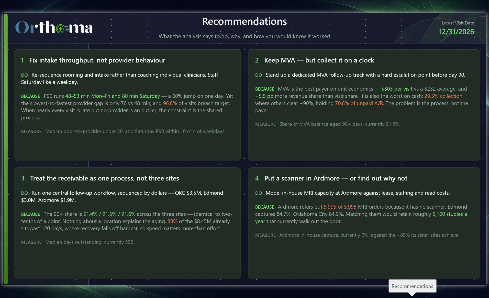

Clinic operations and revenue-cycle analytics for a three-site orthopedic
walk-in practice — from an Azure SQL warehouse, through a TMDL semantic model, to an
eight-page executive report.
Synthetic-data portfolio project. Financial and operating figures are sample results, not production client outcomes. View Paige Justice's complete portfolio.
A walk-in orthopedic practice competes on access. If a patient waits too long
they leave — and the visit, the imaging and the downstream procedure leave with them. But
access is only half the story: two clinics can see identical volume and convert it into very
different revenue, depending on payer mix and how well claims actually collect.
Are access, demand and revenue moving in the right direction across locations?
When — and under which provider conditions — do waits break target?
Which payers convert visits into revenue most effectively?
Where is unresolved motor-vehicle-accident exposure aging, and which site needs action first?
Where is imaging captured in-house, and which sites refer revenue out?
Clinic Overview — the executive summary page.
Architecture
A warehouse, not a spreadsheet
Power BI binds only to the curated rpt.* view layer. Reshaping a
fact table or renaming a physical column doesn't break the report, because the views absorb
the change — and the same boundary doubles as the security boundary.
Azure SQLstg.* staging
→
Warehousedim.* / fact.*
→
Contractrpt.* views
→
Semantic modelTMDL · 83 measures
→
ReportPBIR · 8 pages
Warehouse
13 tables, 12 views and the stored procedures that generate and load the synthetic
data — scripted as-deployed, one object per file.
Semantic model
12 tables, 85 columns, 83 measures, 15 relationships. Authored in TMDL so every
measure is reviewable as text.
Security
The report connects as a read-only principal holding one grant —
SELECT on rpt. Location security role definitions are included; production enforcement requires separate validation.
Source control
PBIP / PBIR / TMDL. Every visual, measure and relationship is plain text and
diffable — no binary .pbix.
What the data said
Findings
Figures below describe the synthetic dataset. Interpretations are hypotheses to investigate, not proven causes or implemented outcomes.
Access is broadly late, not occasionally catastrophic
Median door-to-provider is 41 minutes against a 30-minute
target; P90 is 59 minutes. 96.8%
of eligible visits exceed 30 minutes, but only 9.0% exceed 60.
That is a whole distribution shifted right, not a long tail — which points at rooming and
scheduling capacity rather than a handful of bad days.
Provider P90 ranges from 48 to 76 minutes. Investigate shared intake constraints and adjust provider comparisons for site, case mix, shift, and workload before assigning cause.
Motor Vehicle Accident is the revenue story — in both directions
MVA is 17.9% of visits but 23.4% of net
revenue — a +5.5 pp positive share gap, and the highest net revenue
per visit of any payer at $303 against a $232 book average.
It is also where the cash is stuck. MVA collects at 29.5%
where every commercial and government payer collects near 90%, and it holds
70.8% of all unpaid A/R.
The receivable is old — and uniformly so
Of $8.45M outstanding across 27,865 open claims,
88% sits in the 121+ day bucket and 91.5% is 90+ days. Median
days outstanding is 595.
Split by site, exposure differs — Oklahoma City $3.5M, Edmond $3.0M, Ardmore $1.9M — but
the 90+ share is essentially identical everywhere
(91.4% / 91.5% / 91.6%). The aging profile is uniform, so this is
a process problem, not a site problem. Prioritise by dollars, not by which clinic looks worst.
Ardmore refers 100% of its MRI volume out
In-house MRI capture is 65.7% overall — but the average hides the
finding. Edmond captures 84.7%, Oklahoma City
84.9%. Ardmore captures none: all
5,995 of its MRI orders go to an outside provider, because the
site has no scanner.
That is a concrete, quantified capital question — the kind a volume-only dashboard never
surfaces.
Recommendations
What to do about it
Findings are only worth the decisions they change. Each one names the action,
the number that justifies it, and how you would know it worked — and they ship
inside the report, not just on this page.

1 Fix intake throughput, not provider behaviour
Do: Re-sequence rooming and intake rather than coaching individual
clinicians. Staff Saturday like a weekday.
Because: P90 runs 48–53 minutes Monday to Friday
and 80 minutes on Saturday — a 60% jump on one day. The gap
between the slowest and fastest provider is only 76 vs 48 minutes, yet
96.8% of visits breach target. When nearly every visit is late
but no provider is an outlier, the constraint is the process every patient passes through.
Measure — median door-to-provider back under 30, and Saturday P90 within
10 minutes of the weekday figure.
2 Keep MVA — but collect it on a clock
Do: Stand up a dedicated MVA follow-up track with a hard escalation point
before day 90.
Because: MVA has the highest modeled net revenue per visit —
$303 per visit against a $232 average, and
+5.5 pp more revenue share than visit share. It is also the worst
on cash: 29.5% collection where others clear ~90%, holding
70.8% of unpaid A/R. Profitability is not established: evaluate costs, payment timing, and realized cash before making a payer strategy decision.
Measure — share of MVA balance aged 90+ days, currently 91.5%.
3 Treat the receivable as one process, not three sites
Do: Run one central follow-up workflow, sequenced by dollars — Oklahoma
City $3.5M, Edmond $3.0M, Ardmore $1.9M.
Because: The 90+ share is
91.4% / 91.5% / 91.6% across the three sites — identical to within
two-tenths of a point. Nothing about a location explains the aging, so site-specific
interventions would be effort spent on noise. 88% of the
$8.45M already sits past 120 days, where recovery falls off hardest, so speed matters more
than volume of effort.
Measure — median days outstanding, currently 595.
4 Put a scanner in Ardmore — or find out why not
Do: Model in-house MRI capacity at Ardmore against lease, staffing and
read costs.
Because: Ardmore refers out 5,995 of 5,995
MRI orders because it has no scanner. Edmond captures 84.7%, Oklahoma City 84.9%. Matching
its sister sites would retain roughly 5,100 studies over the same reporting period that
are referred out. Annualize volume and evaluate costs and capacity before using this assumption in a capital model.
Measure — Ardmore in-house capture, currently 0%, against the ~85% its
sister sites already achieve.
On honesty: these are directional recommendations grounded in the model.
Turning them into a business case needs cost inputs this dataset does not contain — imaging
lease and read costs, collections staffing, the true value of a retained referral. The
analysis says where to look and how much is at stake; it does not claim to have priced
the answer.
Modelling
Two facts that deliberately do not touch
Visits and Claims are separate fact tables with
no relationship between them. They conform only through shared dimensions —
Date, Location, Payer Class.
A visit and a claim are different grains, and a claim can exist without a
matching visit in scope. Wiring them together would let someone drop Aging Bucket
onto a visit-grain visual and get a number that looks plausible and is wrong.
That decision has a cost, and it is paid explicitly: because claim-grain fields cannot
filter visit-grain visuals, the report ships two drillthrough pages rather
than one. Claim-side visuals drill to Claim Details, visit-side visuals to Visit Details.
Decision
Why
Median & P90 via MEDIANX / PERCENTILEX.INC
Computed over an eligibility-filtered set, so nulls and non-clinical visits never dilute the statistic.
Deltas anchored to last activity
Trailing 30 days against the prior 30, anchored to the last date with real data — a blank tail can't silently flatten a trend.
Unresolved A/R
An Open-or-Denied claim calculation, never described as a cash ledger balance.
Native reference labels
KPI deltas are real card reference labels driven by DAX colour measures — not text boxes floated on top.
Try it
Explore the report
All data is synthetic. Download the released PBIX or inspect the screenshots and source. The model includes three location security role definitions; production role assignments and enforcement have not been validated in this portfolio review.
The .pbix opens in Power BI Desktop, which is free. Every slicer, cross-filter
and drillthrough works, and the data travels with the file — no database or account needed.
Inspect the model
Desktop also opens the model itself: 12 tables, 15 relationships, 83 measures, and the DAX
behind every figure quoted on this page.
Who built this
Paige Justice
I build analytics that hold up under questioning — where every number on a page can be
traced back through a measure, a view and a table to the row that produced it.
Orthoma is a complete vertical slice of that: a synthetic Azure SQL warehouse, a curated
view layer that doubles as the security boundary, a TMDL semantic model kept in source
control as plain text, and an eight-page report that ends with recommendations rather
than charts. The modelling decisions are documented — including the one that costs the
report an extra drillthrough page — because the reasoning is the part worth reviewing.
I'm open to conversations about business intelligence and analytics engineering roles,
particularly in healthcare.